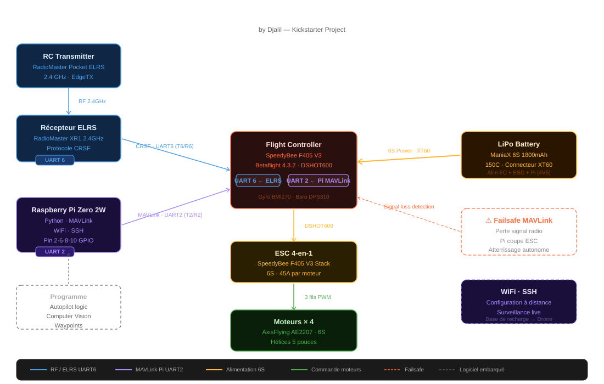
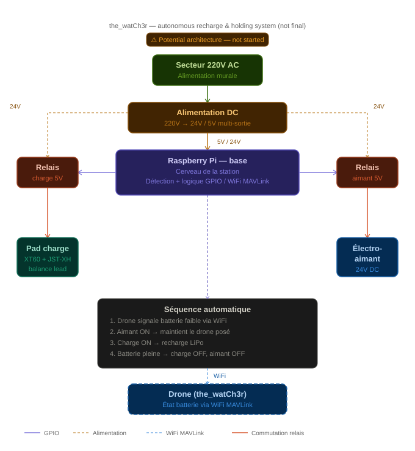

A full breakdown of the hardware, firmware and systems that power The Watcher — every component, every choice, documented.
Physical & Flight
| Frame size | 250 mm diagonal |
| Total weight (no payload) | ~310 g |
| Max takeoff weight | 650 g |
| Propellers | 5-inch · 3-blade |
| Frame material | Carbon fiber |
| Motors | AxisFlying AE2207 V2 — 6S ×4 |
| Battery | ManiaX 6S 1800 mAh LiPo — 150C XT60 |
| Estimated flight time | 12 – 18 min (mission dependent) |
| Max operational range | ~800 m (with telemetry link) |
Electronics & Compute — Drone
| Flight controller | SpeedyBee F405 V3 stack (FC + 4-in-1 ESC) |
| ESC protocol | Multishot |
| Firmware | INAV |
| RC receiver | RadioMaster XR1 — ELRS 2.4 GHz on UART6 |
| RC protocol | CRSF |
| RC transmitter | RadioMaster Pocket |
| GPS module | In transit — u-blox M10 compatible |
| Companion computer | Raspberry Pi |
| MAVLink bridge | UART2 — configured, ready |
| ARM switch | CH5 |
| Failsafe | Land (RTH when GPS arrives) |
| Surveillance camera | Onboard — in development |
Charging Base — In Development
| Controller | Raspberry Pi |
| Holding mechanism | Electromagnet |
| Charging contacts | 2× relay pads (XT60 + JST-XH balance) |
| Precision docking | Pogo pins |
| Communication | WiFi / MAVLink |
| Power supply | 220 V AC → 24 V / 5 V DC |
| Estimated cost | ~150€ |
Complete hardware connection diagrams — from the flight controller to the Raspberry Pi, ESCs, motors, GPS and battery.
01 — Drone architecture

02 — Charging base architecture

The heart of The Watcher — INAV on a SpeedyBee F405 V3, tuned by hand, with a Raspberry Pi companion computer running the custom mission layer.
INAV firmware flashed and configured for The Watcher's exact airframe — Multishot ESC protocol, CRSF receiver link, and hand-tuned flight modes.
A Raspberry Pi rides onboard, linked to the flight controller over MAVLink (UART2). It will run the surveillance logic, patrol scheduling, and base-station handoff.
Link-loss failsafe set to Land (return-to-home once GPS arrives), low-battery failsafe, and an ARM switch on CH5 — safety first, autonomy second.
250 mm carbon airframe assembly, motor and ESC selection, SpeedyBee F405 V3 stack installation and full wiring harness.
INAV flashed and configured: Multishot ESC protocol, ELRS/CRSF receiver binding, ARM switch, failsafes, and MAVLink bridge for the Raspberry Pi.
GPS waypoint missions, altitude hold, return-to-home, and companion computer integration for higher-level mission planning.
Real-time telemetry dashboard, visual mission planning interface, geofence editor, and flight replay analysis.
Onboard obstacle detection, visual target tracking, and autonomous landing zone recognition using the onboard camera and Raspberry Pi.
▲ Back The Watcher on Kickstarter — fund the computer vision module